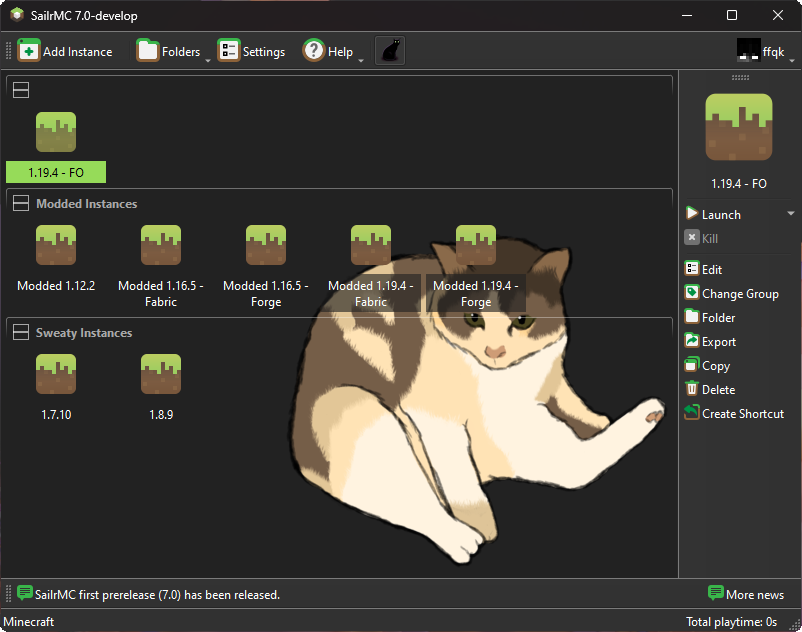

SailrMC
An open source DRM-free Minecraft launcher with the ability to manage multiple instances, accounts, and mods. Focused on user freedom and free redistributability.

An open source DRM-free Minecraft launcher with the ability to manage multiple instances, accounts, and mods. Focused on user freedom and free redistributability.